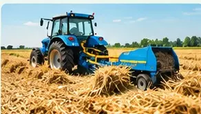
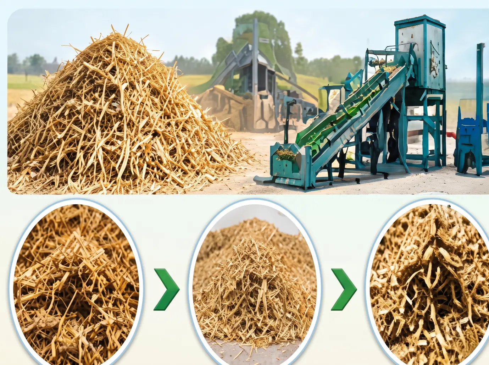
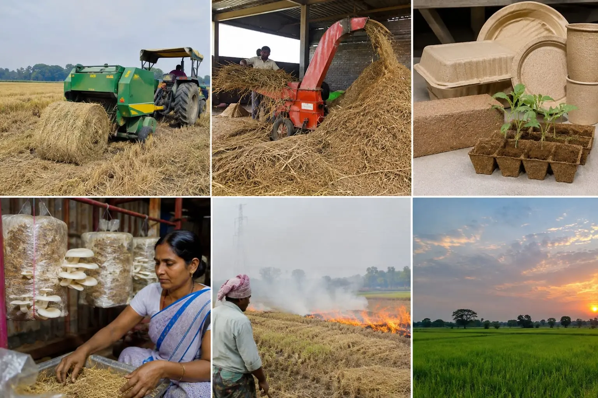
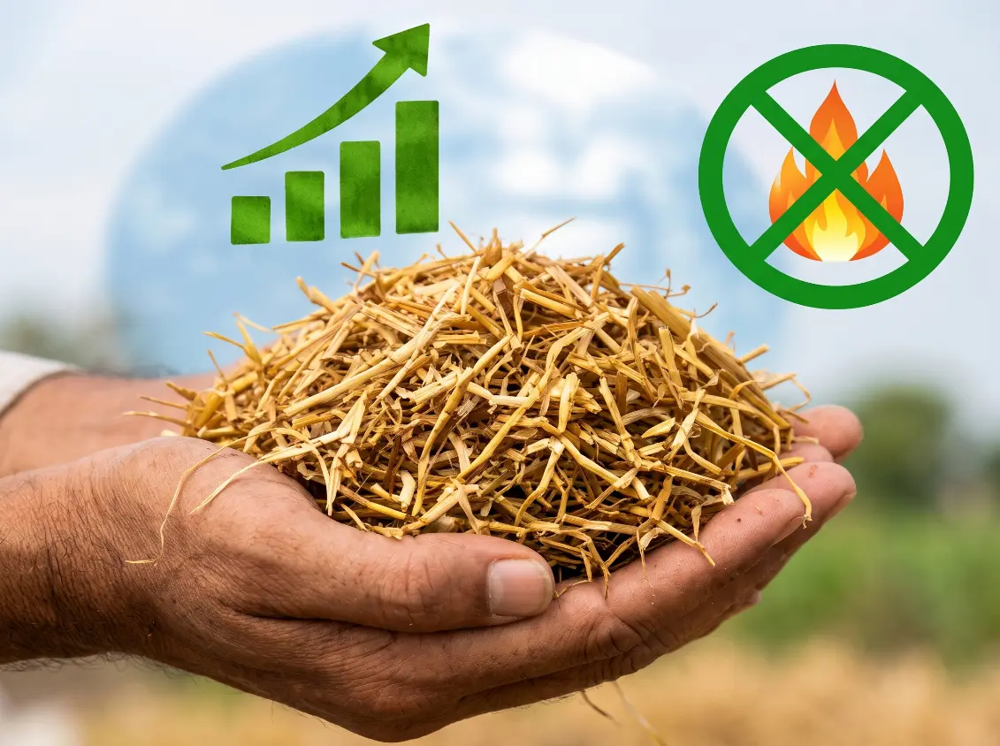
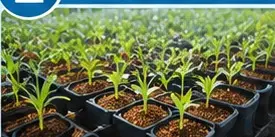
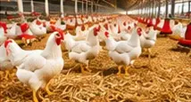

We promote a resource-efficient, circular agricultural ecosystem that converts post-harvest biomass into value-added materials for agriculture, livestock, packaging, nursery applications, and renewable energy industries. Through mechanisation, decentralised processing infrastructure, and market-linked supply chains, we aim to improve residue utilisation while generating additional income opportunities for farmers, rural entrepreneurs, and women-led self-help groups (SHGs).
Book ServiceEfficient collection, baling, chopping, and aggregation of paddy straw and other agricultural residues.

Conversion of agricultural waste into chopped biomass, straw powder, fibre, and other value-added raw materials.

Development of straw-based nursery growing media, poultry bedding, fibre-based packaging, paper, cardboard, and artisan products.

Establishment of resource recovery and utilisation pathways that transform agricultural waste into commercially valuable products.

Development of decentralised collection, storage, transportation, processing, and buyer-linkage networks.
Exploring agricultural biomass utilisation for biogas and other bioenergy applications, subject to technical and economic feasibility.
Promoting SHG-led biomass processing, mushroom cultivation, handmade paper, and other village-level enterprises.

Processing crop residues into nutrient-rich, easily digestible animal feed to support local livestock farming ecosystems.

To establish an integrated agricultural circular economy where crop residues are transformed from an environmental burden into valuable economic resources. We aim to accelerate the transition towards low-waste, resource-efficient, climate-resilient agriculture while reducing environmental pollution, strengthening rural livelihoods, and creating sustainable bio-based industries.